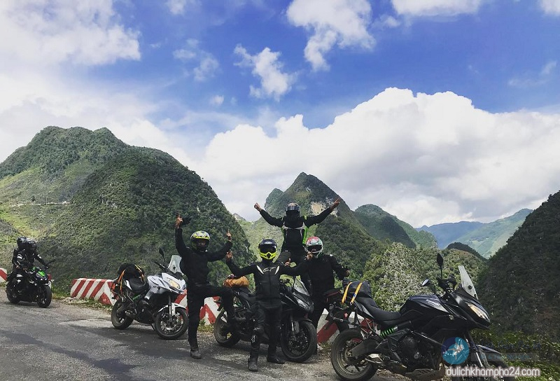
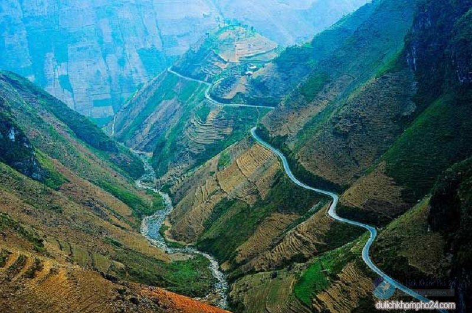
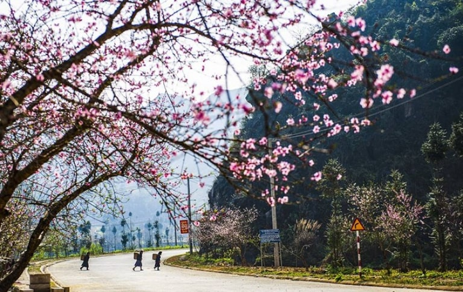
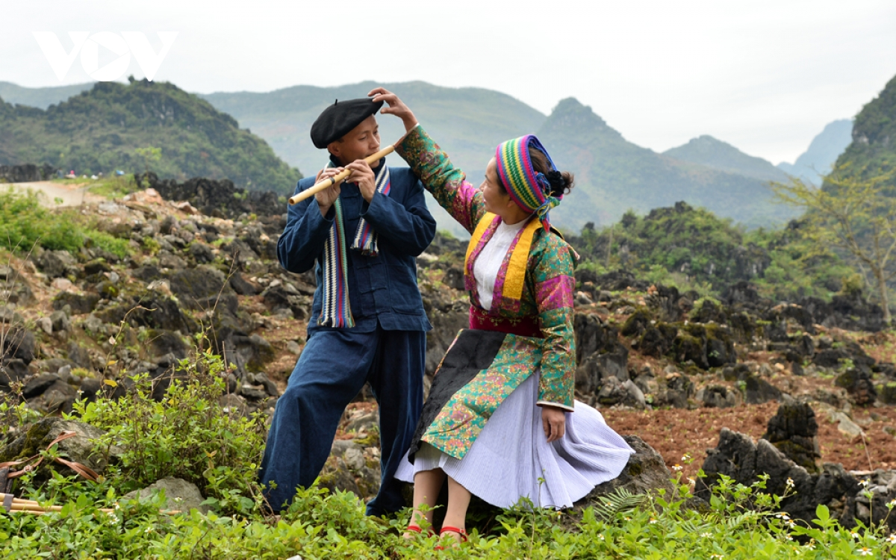
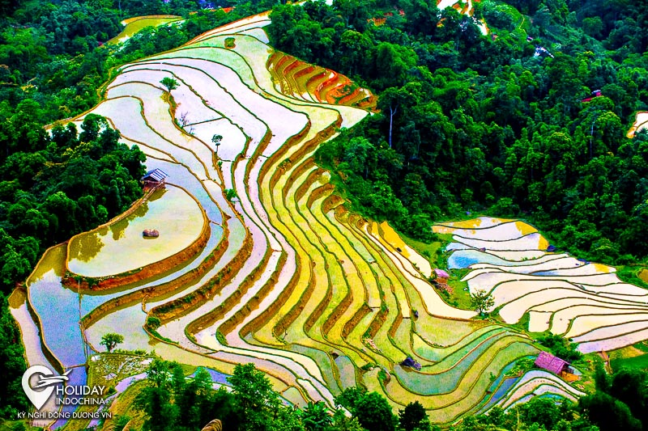
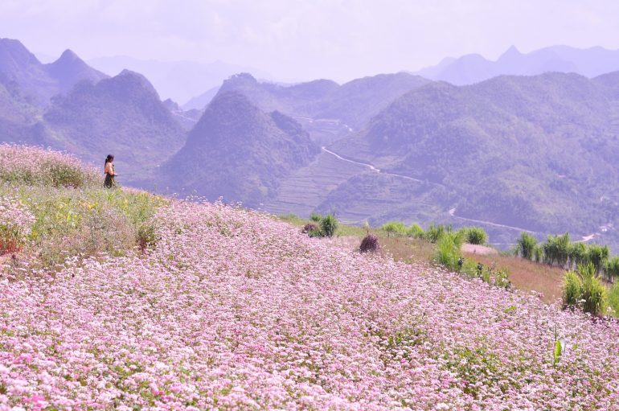
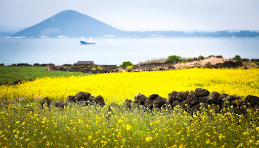
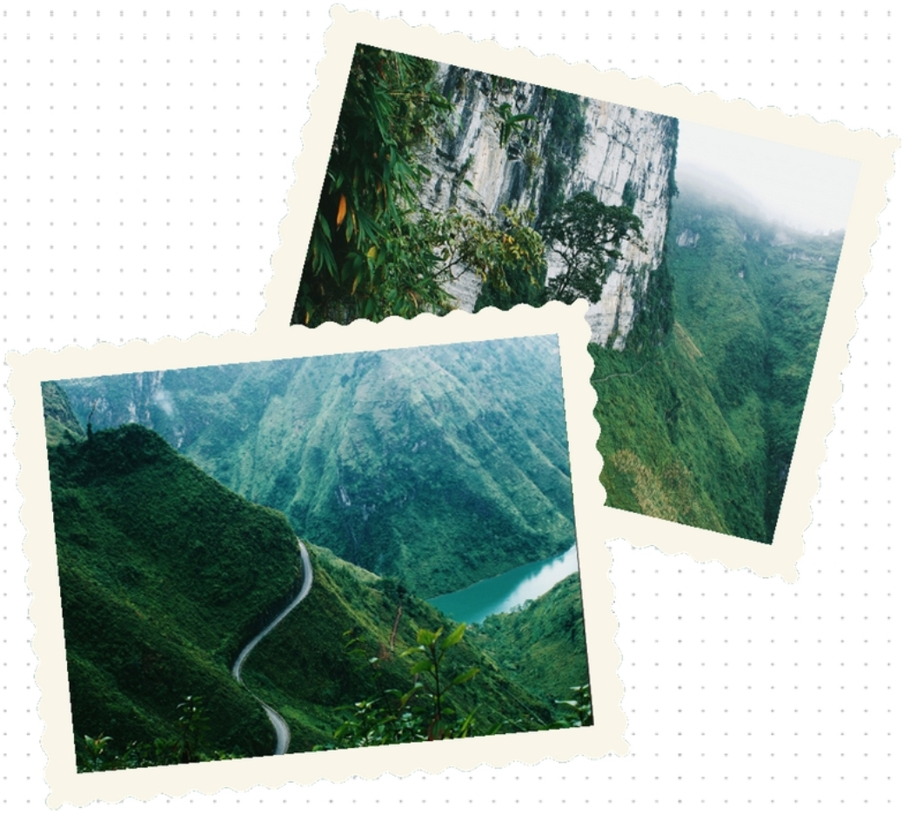
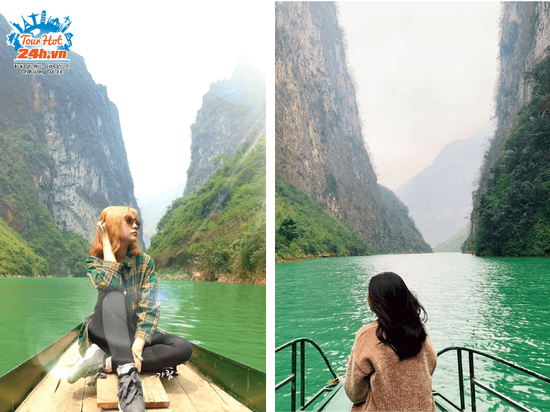

Mã Pí Lèng được biết là ngọn đèo nổi tiếng nhất ở Hà Giang với những cung đường uốn lượn hiểm trở với những vách đá dốc treo leo, nhưng khi đặt chân đến đỉnh đèo, du khách sẽ cảm thấy khung cảnh nơi đây thật tuyệt vời. Mây trắng len qua tay, đồi núi xanh mướt trải bạt ngàn, sông Nho Quế êm đềm lặng lẽ... sẽ là những gì bạn thấy khi đứng giữa con đèo này.
Đèo Mã Pí Lèng nằm ở tỉnh Hà Giang, giữa cao nguyên đá Đồng Văn. So với mực nước biển, đỉnh đèo có độ cao khoảng 1.200m, với độ dài 20km.
Cái tên Mã Pí Lèng có nghĩa là "sống mũi con ngựa", được mệnh danh là một trong tứ đại đỉnh đèo của mảnh đất Việt Nam. Một trong những cung đường hiểm trở nhất ở Hà Giang, nhưng nó có ý nghĩa vô cùng quan trọng đối với người dân nơi đây
Đi bằng xe khách
Thông thường, xe khách xuất phát sẽ xuất phát từ bến xe Mỹ Đình đi lên Hà Giang vào lúc 5 giờ sáng đến 9 giờ tối nên bạn hoàn toàn có thể thoải mái lựa chọn khung giờ phù hợp với chuyến đi của mình. Sau đó nếu bạn muốn chinh phục đèo Mã Pí Lèng bằng xe máy thì hãy tham khảo những địa điểm thuê xe máy Hà Giang uy tín nhé.
Đi bằng xe máy
Đối với những bạn trẻ đam mê đi phượt có thể lựa chọn di chuyển bằng xe máy, tuy nhiên đoạn đường di chuyển lên đèo khá nguy hiểm vì vậy đòi hỏi bạn phải lựa chọn loại xe phù hợp và người lái phải có tay lái cứng để đảm bảo tính an toàn trong suốt chuyến đi. Đừng quên mang thêm xăng dự trữ và đồ sửa xe vì đoạn đường lên đèo rất cao và dốc, khi xe gặp sự cố rất khó để tìm chỗ sửa.

Cung đường 1: từ Hà Nội đi về phía cầu Thăng Long rồi rẽ sang Việt Trì, Phú Thọ đi qua Tuyên Quang là tới Hà Giang.
Cung đường 2: từ Hà Nội đi Sơn Tây, thẳng tới cầu Trung Hà rồi qua Cổ Tiết tới cầu Phong Châu lên thị xã Phú Thọ, Đoan Hùng rồi rẽ đi Tuyên Quang theo hướng quốc lộ 2 để tiến tới Hà Giang.

Vì cung đường đèo Mã Pí Lèng khá nhỏ, nhiều dốc lượn vòng, khá khó đi nên nếu đi tự túc thì hãy đảm bảo mình là tay lái cứng, thường xuyên "phượt" hoặc đi "xe ôm bản địa". Còn nếu đi xe khách hay các tour du lịch Hà Giang thì nên chọn nhà xe uy tín hoặc các tour có tài xế quen thuộc địa hình ở đây. Đèo Mã Pí Lèng tuy không phải con đường đèo dài nhất nhưng lại là cung đường vòng vo, nhiều khúc cua tay áo hiểm trở nhất trong tứ đại đỉnh đèo miền Bắc nên hãy chắc chắn bạn được đi cùng "xe ôm" hay tài xế ô tô thường xuyên đi đường ở đây nhé.
Các bạn hoàn toàn có thể đi đèo Mã Pí Lèng Hà Giang vào bất kỳ thời điểm nào trong năm để chiêm ngưỡng trọn vẹn hương sắc vì mảnh đất nơi đây luôn đẹp và cực kỳ nên thơ.
Tháng 1 đến tháng 3 , Tháng 1 đến tháng 3, thời điểm được nhiều người lựa chọn để du xuân, cũng là lúc hoa đào, hoa mận nở rộ. Từ trên đỉnh đèo nhìn xuống, hiện ra trước mắt du khách là một bức tranh ngày xuân của vùng cao tràn đầy sức sống.

Nếu quý du khách muốn tham gia phiên Chợ tình Khâu Vai thì hãy ghé thăm Hà Giang vào tháng 4 bạn sẽ có dịp để hiểu hơn về văn hóa truyền thống của dân tộc nơi đây. Có một điểm đặc biệt so với những "chợ Tình" vùng khác, Chợ tình Khâu Vai ở Hà Giang là dịp các đôi từng yêu nhau nhưng không có duyên nên vợ chồng có thể tìm lại nhau, trò chuyện và chia sẻ về mọi điều.

Đến Hà Giang vào dịp tháng 5 - Mùa nước đổ ải. Từ trên đỉnh Mã Pí Lèng bạn sẽ được chiêm ngưỡng một bức họa gam màu trầm, không rực rỡ như mùa xuân hay thu khi loài hoa, lúa trổ bông, nhưng chắc chắn không kém phần cuốn hút và quyến rũ.

Tháng 6 đến tháng 8 mùa này đã vào thu, khí hậu mát mẻ, không quá nắng nóng giúp bạn thuận lợi hơn khi khám phá các địa điểm của cao nguyên đá hùng vĩ và chinh phục những đỉnh đèo hiểm trở.
Tháng 9, Hà Giang trở nên hút hồn hơn bao giờ hết, dọc đường lên đỉnh đèo quý khách sẽ được ngắm nhìn những thửa ruộng bậc thang vàng rực giữa rừng sâu núi đá khi bước vào mùa lúa chín.
Tháng 10 và tháng 11, là mùa của Hoa tam giác mạch - loài hoa chỉ có ở vùng núi phía bắc, cánh hoa nhỏ li ti mang theo sắc hồng phai sau đó sẽ đậm dần khi về cuối mùa. Đem đến cho du khách một cảm giác thanh bình, tâm hồn trở nên dịu nhẹ, thơ mộng khi thả hồn giữa những cánh đồng hoa tam giác mạch trải dài đến tận chân trời.

Tháng 12, tiết trời se lạnh hơn lúc này những bông hoa cải vàng đã nở rộ và dần phủ kín những cao nguyên đá. Từ những đoạn đường đèo đến những con đường dẫn lối vào các làng bản của người dân sinh sống đều được phủ kín bằng sắc hoa cải vàng, khiến cho bức tranh Hà Giang mùa đông không còn ảm đạm như người ta thường nghĩ, thay vào đó là gam màu vàng rực rỡ quyến rũ.

Trekking dọc Mã Pí Lèng
Bạn sẽ nhìn thấy điểm ngắm view cực đã nằm ở giữa chặng đường đèo, cùng những cung đường đi bộ dọc theo những ngọn núi với khung cảnh thiên nhiên hùng vĩ. Cung đường đi bộ trekking dài từ 2,5 km đến 3,5 km, đi trekking thì bạn chụp nhiều hình đẹp hơn, thư thả hơn.

Đi thuyền trên sông Nho Quế
Đặt chân đến Hà Giang mà không đi thuyền trên sông Nho Quế, vượt hẻm Tu Sản là đã bỏ qua tuyệt tác thiên nhiên ban tặng cho mảnh đất này rồi. Dòng sông hiền hòa chảy uốn quanh núi đồi nơi đây như thổi hồn cho khung cảnh núi rừng nơi đây trở nên dịu dàng, thơ mộng hơn hơn trong mắt du khách.
Có lẽ phải chạm chân đến nơi đây tận mắt chứng kiến dòng sông hiền hòa uốn lượn như đang xẻ đôi núi đồi bạn mới có thể cảm nhận hết được vẻ đẹp của tạo hóa đã ban tặng cho Hà Giang. Đứng giữa núi đồi, hòa mình với thiên nhiên, núi rừng hùng vĩ khi lại nên thơ, dịu dàng du khách sẽ cảm thấy mình thật may mắn khi có cơ hội được chứng kiến cảnh đẹp tuyệt sắc của núi rừng.

Cách đi: có 2 đường
Một là đường xuống thủy điện, đường này xe ô tô có thể đi được và khá dễ đi, view cũng đẹp nhưng không đẹp bằng đường thứ 2.
Đường 2 thấy toàn dân địa phương đi, đây là con đường đáng sợ nhất mình từng đi, đường quanh co khúc khỉu với dốc dựng đứng, tay lái yếu là rớt xuống vực luôn. Đoạn này đường có chỗ đổ bê tông có chỗ là nhựa nhưng chỉ rộng 1m đủ cho 1 xe đi. Nhưng bù lại thì cảnh siêu siêu đẹp, chụp được nguyên cả sông Nho Quế và núi đá vôi 2 bên.
Ở dưới chỗ bắt đầu đi thuyền có làng người đồng bào bạn có thể gọi điện ông lái đò trước nhờ người trong làng ra đón từ trên đèo chở xuống nếu không dám lái xe. Giá khoảng 100K/người/1 lượt. Giá đi thuyền trên sông Nho Quế là 300K/thuyền.